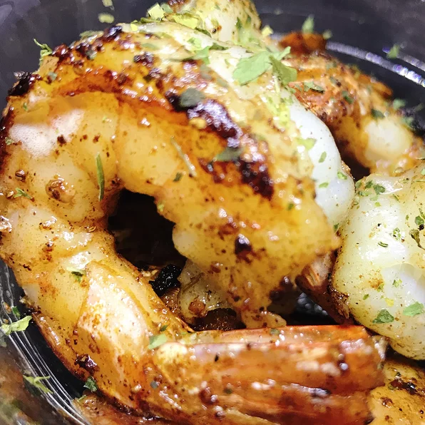

<!DOCTYPE html>
<html lang="en">
    <head>
        <meta charset="UTF-8">
        <title>Shrimp</title>
    </head>
</html>
<body>


<div><h1>Lemon Garlic Shrimp</h1></div>
<div></div>

<div><h2>Garlic Jumbo Shrimp</h2>
<p>The delcious Shrimp Receipe</p>
</div>

<div>
<h1>Ingredients</h1>

<ul>
    <li>1 tablespoon olive oil, or as needed </li>
    <li>16 large shrimp - peeled, deveined, and tails on, or more to taste </li>
    <li>3 large cloves garlic, smashed, or more to taste </li>
    <li>1 teaspoon crushed red pepper, or to taste </li>
    <li>2 teaspoons seafood seasoning (such as Old Bay®), or to taste </li>
    <li>salt and ground black pepper to taste </li>
    <li>2 tablespoons lemon juice </li>
    <li>3 tablespoons chopped fresh parsley </li>
    <li>3 teaspoons lemon zest </li>
    
</ul>
</div>

<div>
    <ol>
        <li>Heat oil in a large skillet over medium-low heat until warm, 2 to 3 minutes. Add shrimp, garlic, and crushed red pepper all at once and stir together. Add seafood seasoning, salt, and black pepper. Mix everything together</li>
        <li>Cook over medium heat until shrimp are fully cooked, 3 to 5 minutes. Pour lemon juice into skillet and stir again. Reduce heat to low; add parsley and lemon zest.</li>
    </ol>
</div>


<div>
    <a href="index.html">Return Home</a>
</div>


</body>